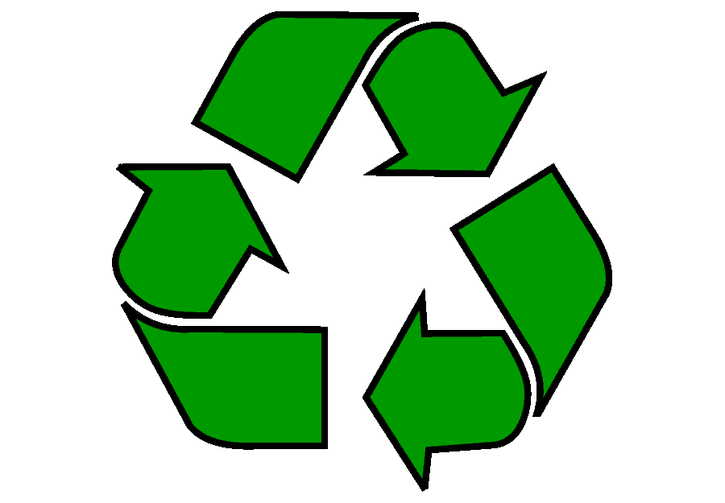

Reciclagem de baterias!
As baterias são fundamentais para alimentar dispositivos essenciais em nosso cotidiano, como celulares, laptops, veículos elétricos e muitos outros. No entanto, elas apresentam desafios significativos relacionados ao descarte e ao impacto ambiental e à saúde humana. A reciclagem e o reaproveitamento de baterias desempenham um papel crucial na minimização desses problemas, mas o manuseio correto e o descarte responsável também são indispensáveis para garantir a segurança de todos.
Por que Reciclar e Reaproveitar Baterias?
As baterias contêm metais pesados e substâncias químicas tóxicas, como chumbo, cádmio, mercúrio, níquel e lítio. Quando descartadas de forma inadequada, esses elementos podem contaminar o solo e a água, colocando em risco os ecossistemas e a saúde humana. Além disso, as baterias possuem materiais valiosos, como cobalto e níquel, que podem ser reaproveitados, reduzindo a necessidade de extração de recursos naturais e diminuindo a pegada ambiental.


Manuseio
Evite abrir ou danificar baterias, pois isso pode liberar substâncias químicas perigosas.
Guarde baterias usadas em um recipiente específico, longe de fontes de calor, para prevenir curto-circuitos e incêndios.
Utilize luvas ao lidar com baterias que apresentem sinais de vazamento ou dano.

Descarte
Nunca jogue baterias no lixo comum. Elas devem ser encaminhadas para pontos de coleta específicos, como supermercados, lojas de eletrônicos e centros de reciclagem.
Consulte programas locais ou municipais de coleta seletiva de baterias para encontrar o local adequado para descarte.
O descarte inadequado de baterias pode causar sérios danos ao meio ambiente e à saúde humana. Elas não devem ser jogadas no lixo comum, pois contêm substâncias tóxicas como mercúrio, cádmio e chumbo. O descarte correto em pontos de coleta específicos evita a contaminação do solo e da água, prevenindo riscos à saúde e ao ecossistema.

Reciclagem
Enviar baterias para reciclagem garante que seus componentes tóxicos sejam tratados adequadamente e os materiais valiosos sejam reaproveitados.
Existem tecnologias de reciclagem específicas para diferentes tipos de baterias, como baterias de chumbo-ácido, lítio-íon e níquel-cádmio, cada uma com processos únicos para minimizar os danos ambientais.
A reciclagem de baterias é um processo crucial para evitar o impacto ambiental causado pelo descarte incorreto. Quando recicladas corretamente, as baterias têm seus componentes perigosos tratados e podem ser reutilizadas, economizando recursos naturais e diminuindo a necessidade de mineração.
Saúde Humana
O contato com as substâncias químicas presentes nas baterias, como metais pesados, pode causar sérios problemas de saúde, como intoxicação, danos neurológicos e até câncer. A exposição a essas substâncias ocorre quando as baterias são descartadas de maneira inadequada, liberando toxinas no ambiente, que podem ser ingeridas ou inaladas.
O contato direto com substâncias químicas pode causar irritação na pele e nos olhos, e a inalação de vapores tóxicos pode levar a dificuldades respiratórias.
A exposição a metais pesados presentes nas baterias pode causar problemas graves, como danos ao sistema nervoso, rins e ossos. O chumbo, por exemplo, é extremamente prejudicial, especialmente para crianças, podendo causar problemas de desenvolvimento cognitivo.

Impacto Ambiental
Baterias descartadas de maneira imprópria liberam compostos tóxicos que se infiltram no solo e na água, causando poluição ambiental. Além disso, esses materiais podem afetar a fauna e flora locais, desequilibrando ecossistemas e prejudicando a biodiversidade. A falta de reciclagem também contribui para o aumento do lixo eletrônico e a degradação do meio ambiente.
Vazamentos de baterias em aterros sanitários podem liberar gases tóxicos que contribuem para a poluição do ar.